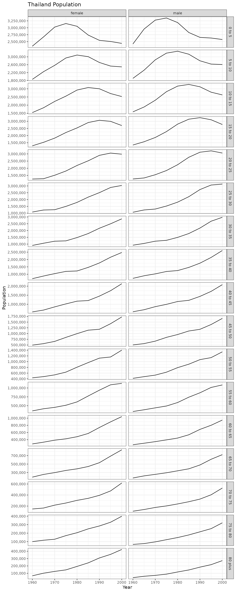
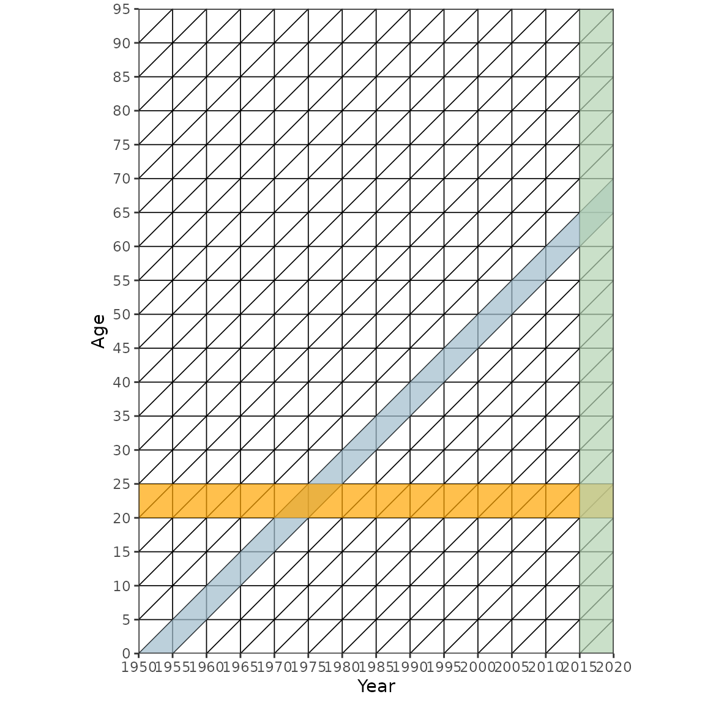
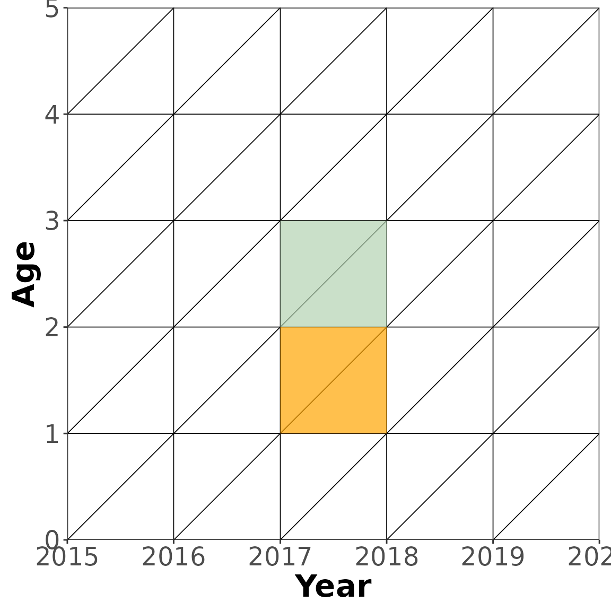
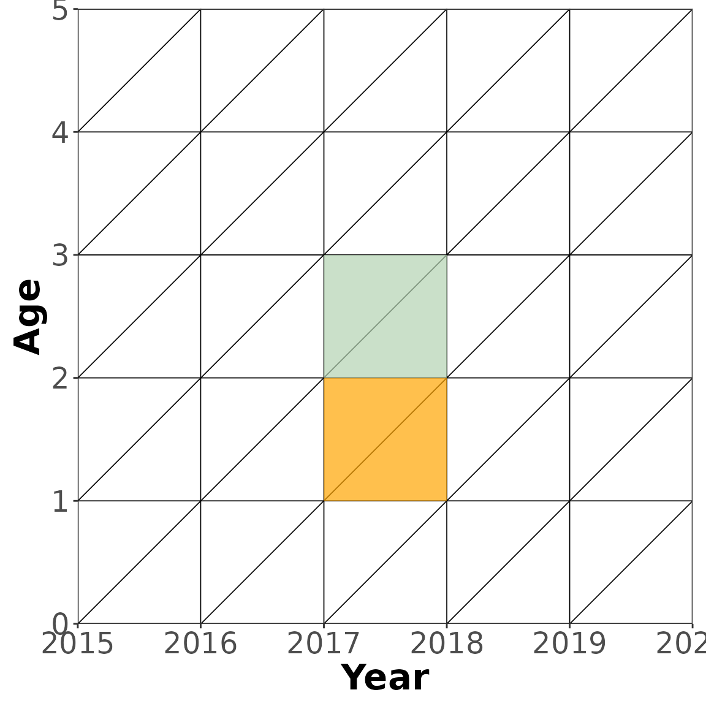
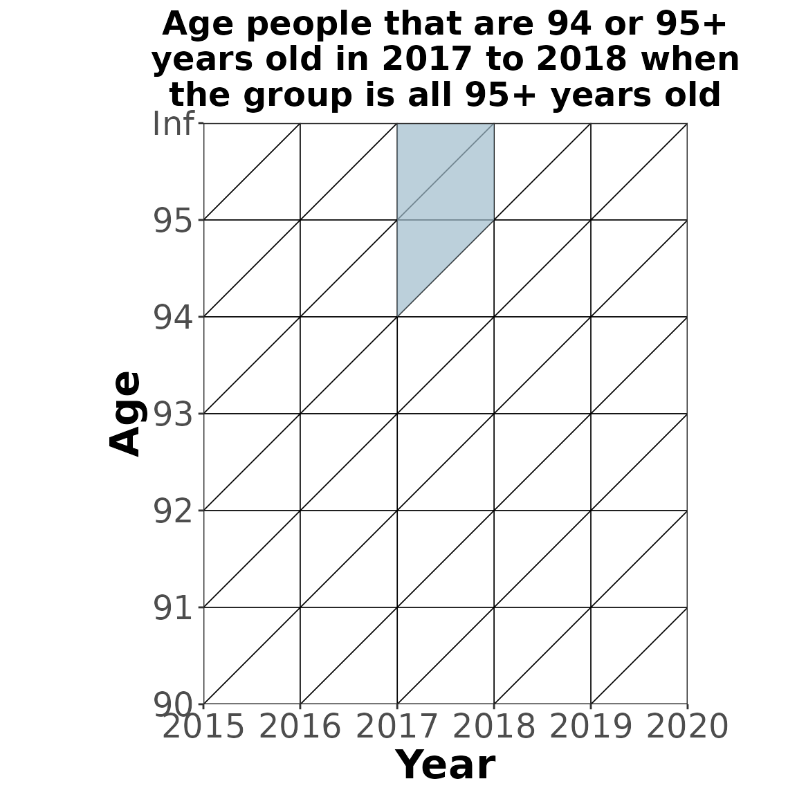

Demographic Balancing Equation
The demographic balancing equation is one of the core concepts of demography. It says that the population at time \(T\) is equal to the population at time \(0\) plus all the people that entered the population through birth or immigration minus the people that left the population through death or emigration.
\[\begin{aligned} N(T) =& N(0) - E[0,T] - D[0,T] + B[0,T] + I[0,T] \\ =& N(0) - D[0,T] + B[0,T] + G[0,T] \\ \\ G[0,T] =& I[0,T] - E[0,T] \\ \\ \text{where:} \ \ \ &\\ N =& \text{population} \\ E =& \text{emigrants} \\ D =& \text{deaths} \\ B =& \text{births} \\ I =& \text{immigrants} \\ G =& \text{net migrants} \end{aligned}\]
CCMPP
The cohort component method of population projection (CCMPP) is the most common method for projecting populations forward in time. It satisfies the age- and sex-specific version of the demographic balancing equation.
CCMPP takes as input age and sex specific estimates of the baseline population, survivorship ratios, net migration proportion, age-specific fertility rates and sex-ratio at birth to produce projected population estimates starting from the baseline.
Below are two sections, the first gives a quick introduction to the demCore::ccmpp function and the second actually gives a more detailed explanation of CCMPP.
demCore::ccmpp function
The demCore package implements ccmpp() and includes some example inputs for Thailand from Wheldon et al 2015.
There are two inputs needed for the demCore::ccmpp function:
- A list of data.tables for each of the ccmpp inputs.
- baseline population
- sex-ratio at birth
- age-specific fertility rates
- survivorship ratios
- net-migration (or immigration and emigration separately)
- A list of settings describing the years, sexes, and ages ccmpp will run with.
Below is a summary of what the Thailand example inputs look like. The baseline population is for the year 1960 and includes both female and male populations for five year age groups up to 80+. The other four inputs define how the population changes every five calendar years between 1960 and 2000. The survivorship ratios go up to age 85+ while the asfr estimates are defined for the reproductive age groups between age 15 and 50.
library(demCore) # the list of data.tables for each of the inputs str(demCore::thailand_initial_estimates) #> List of 5 #> $ srb :Classes 'data.table' and 'data.frame': 8 obs. of 3 variables: #> ..$ year_start: num [1:8] 1960 1965 1970 1975 1980 ... #> ..$ year_end : num [1:8] 1965 1970 1975 1980 1985 ... #> ..$ value : num [1:8] 1.11 1.08 1.07 1.05 1.04 ... #> ..- attr(*, ".internal.selfref")=<externalptr> #> ..- attr(*, "sorted")= chr [1:2] "year_start" "year_end" #> $ asfr :Classes 'data.table' and 'data.frame': 56 obs. of 5 variables: #> ..$ year_start: num [1:56] 1960 1960 1960 1960 1960 ... #> ..$ year_end : num [1:56] 1965 1965 1965 1965 1965 ... #> ..$ age_start : num [1:56] 15 20 25 30 35 40 45 15 20 25 ... #> ..$ age_end : num [1:56] 20 25 30 35 40 45 50 20 25 30 ... #> ..$ value : num [1:56] 0.0518 0.2402 0.2888 0.2721 0.2122 ... #> ..- attr(*, ".internal.selfref")=<externalptr> #> ..- attr(*, "sorted")= chr [1:4] "year_start" "year_end" "age_start" "age_end" #> $ baseline :Classes 'data.table' and 'data.frame': 34 obs. of 5 variables: #> ..$ year : int [1:34] 1960 1960 1960 1960 1960 1960 1960 1960 1960 1960 ... #> ..$ sex : chr [1:34] "female" "female" "female" "female" ... #> ..$ age_start: num [1:34] 0 5 10 15 20 25 30 35 40 45 ... #> ..$ age_end : num [1:34] 5 10 15 20 25 30 35 40 45 50 ... #> ..$ value : num [1:34] 2338000 1857000 1543000 1287000 1250000 ... #> ..- attr(*, ".internal.selfref")=<externalptr> #> $ survival :Classes 'data.table' and 'data.frame': 288 obs. of 6 variables: #> ..$ year_start: num [1:288] 1960 1960 1960 1960 1960 1960 1960 1960 1960 1960 ... #> ..$ year_end : num [1:288] 1965 1965 1965 1965 1965 ... #> ..$ sex : chr [1:288] "female" "female" "female" "female" ... #> ..$ age_start : num [1:288] 0 5 10 15 20 25 30 35 40 45 ... #> ..$ age_end : num [1:288] 5 10 15 20 25 30 35 40 45 50 ... #> ..$ value : num [1:288] 0.914 0.961 0.99 0.992 0.988 ... #> ..- attr(*, ".internal.selfref")=<externalptr> #> ..- attr(*, "sorted")= chr [1:5] "year_start" "year_end" "sex" "age_start" ... #> $ net_migration:Classes 'data.table' and 'data.frame': 272 obs. of 6 variables: #> ..$ year_start: num [1:272] 1960 1960 1960 1960 1960 1960 1960 1960 1960 1960 ... #> ..$ year_end : num [1:272] 1965 1965 1965 1965 1965 ... #> ..$ sex : chr [1:272] "female" "female" "female" "female" ... #> ..$ age_start : num [1:272] 0 5 10 15 20 25 30 35 40 45 ... #> ..$ age_end : num [1:272] 5 10 15 20 25 30 35 40 45 50 ... #> ..$ value : num [1:272] 0 0 0 0 0 0 0 0 0 0 ... #> ..- attr(*, ".internal.selfref")=<externalptr> #> ..- attr(*, "sorted")= chr [1:5] "year_start" "year_end" "sex" "age_start" ... # the settings for this run of ccmpp thailand_settings <- list( years = seq(1960, 1995, 5), sexes = c("female", "male"), ages = seq(0, 80, 5), ages_survival = seq(0, 85, 5), ages_asfr = seq(15, 45, 5) )
Once those inputs are ready ccmpp can be run to produce a full time series of projected populations between 1960 and 2000 in five year age groups up to 80+.
thailand_population <- ccmpp( inputs = demCore::thailand_initial_estimates, settings = thailand_settings ) str(thailand_population) #> Classes 'data.table' and 'data.frame': 306 obs. of 5 variables: #> $ year : int 1960 1960 1960 1960 1960 1960 1960 1960 1960 1960 ... #> $ sex : chr "female" "female" "female" "female" ... #> $ age_start: num 0 5 10 15 20 25 30 35 40 45 ... #> $ age_end : num 5 10 15 20 25 30 35 40 45 50 ... #> $ value : num 2338000 1857000 1543000 1287000 1250000 ... #> - attr(*, ".internal.selfref")=<externalptr> #> - attr(*, "sorted")= chr [1:4] "year" "sex" "age_start" "age_end"

CCMPP Details
Explained below are some of the basics of CCMPP using notation from Preston et al 2001, this is a great resource for more detailed explanations of CCMPP and other demography concepts.
Lexis Diagrams
In order to understand CCMPP it is helpful to use lexis diagrams. A lexis diagram is a simple tool often used in demography to clearly identify the ages, calendar years and cohorts included in a given population. The lexis diagrams in the following sections were created using LexisPlotR which is highly recommend.

CCMPP for most age groups with out migration
CCMPP for all age groups except the youngest and oldest when ignoring migration is fairly simple. The example below (blue parallelogram) shows how to age the cohort of people that are 1 year old in 2017 \({_1}N_{1}(2017)\) to 2018 when the same cohort is now 2 years old \({_1}N_{2}(2018)\). The survivorship ratio \(\frac{{_1}L_{2}[2017, 2018]}{{_1}L_{1}[2017, 2018]}\) is used to calculate the proportion of \({_1}N_{1}(2017)\) alive after one year. This ratio could for example come from a \([2017, 2018]\) period specific life table and actually represents the proportion of people age 1 that survive another year in a stationary population subject to this life table. In the example below the orange square captures person years lived by 1 year olds \({_1}L_{1}[2017, 2018]\) and the green square captures person years lived by 2 year olds \({_1}L_{2}[2017, 2018]\)
Example equation: \[{_1}N_{2}(2018) = {_1}N_{1}(2017) \cdot \frac{{_1}L_{2}[2017, 2018]}{{_1}L_{1}[2017, 2018]}\]
General equation: \[{_n}N_{x}(t + n) = {_n}N_{x - n}(t) \cdot \frac{{_n}L_{x}[t, t + n]}{{_n}L_{x - n}[t, t + n]}\]
where: \[\begin{aligned} {_n}N_{x}(t) = & \text{the population at time } t \text{ between age } x \text{ and } x + n \\ {_n}L_{x}[t, t + n] = & \text{the number of person-years lived between time } t \text{ and } t + n \text{ and between age } x \text{ and } x + n \end{aligned}\]
 

CCMPP for most age groups with migration
When modeling actual populations migration needs to be accounted for. These migrants are also at risk of dying and giving birth in their new populations but it is unknown when exactly in the interval they migrated. A standard assumption is that half of the migrants in a given interval migrate at the beginning of the interval and the other half at the end of the interval.
Example equation: \[{_1}N_{2}(2018) = \bigg[ \bigg( {_1}N_{1}(2017) + \frac{{_1}G_1[2017, 2018]}{2} \bigg) \cdot \frac{{_1}L_{2}[2017, 2018]}{{_1}L_{1}[2017, 2018]} \bigg] + \frac{{_1}G_2[2017, 2018]}{2}\]
General equation: \[{_n}N_{x}(t + n) = \bigg[ \bigg( {_n}N_{x - n}(t) + \frac{{_n}G_{x - n}[t, t + n]}{2} \bigg) \cdot \frac{{_1}L_{x}[t, t + n]}{{_n}L_{x - n}[t, t + n]} \bigg] + \frac{{_n}G_{x}[t, t + n]}{2}\]
where: \[\begin{aligned} {_n}N_{x}(t) = & \text{the population at time } t \text{ between age } x \text{ and } x + n \\ {_n}L_{x}[t, t + n] = & \text{the number of person-years lived between time } t \text{ and } t + n \text{ and between age } x \text{ and } x + n \\ \frac{{_n}G_{x}[t, t + n]}{2} = & \text{the net number of migrants between time } t \text{ and } t + n \text{ and between age } x \text{ and } x + n \end{aligned} \]
CCMPP for the youngest age group with out migration
For the youngest age group the number of births occuring in the interval needs to be calculated and then the survivorship ratios are used to calculate the proportion that survive to the next time point.
Example equation: \[\begin{aligned} {_1}N_{0}(2018) =& \cdot B[2017, 2018] \cdot \frac{{_1}L_{0}[2017, 2018]}{1 \cdot l_0[2017, 2018]} \\ B[2017, 2018] =& \sum_{x=0}^{A} \frac{1}{2} \cdot {_1}F_x \cdot \frac{{_1}N^F_{x+1}(t) + {_1}N^F_x(t) \cdot \frac{{_1}L_{x+1}[t, t+1]}{{_1}L_{x}[t, t+1]}}{2} \end{aligned}\]
General equation: \[\begin{aligned} {_n}N_{0}(t + n) =& \cdot B[t, t + n] \cdot \frac{{_n}L_{0}[t, t + n]}{n \cdot l_0[t, t + n]} \\ B[t, t + n] =& \sum_{x=0}^{A} \frac{n}{2} \cdot {_n}F_x[t, t + n] \cdot \frac{{_n}N^F_{x}(t) + {_n}N^F_{x - n}(t) \cdot \frac{{_n}L_{x}[t, t + n]}{{_n}L_{x - n}[t, t + n]}}{2} \end{aligned}\]
where: \[\begin{aligned} {_n}N_{x}(t) =& \text{the population at time } t \text{ between age } x \text{ and } x + n \\ {_n}L_{x}[t, t + n] =& \text{the number of person-years lived between time } t \text{ and } t + n \text{ and between age } x \text{ and } x + n \\ B[t, t + n] =& \text{the number of births between time } t \text{ and } t + n \\ {_n}F_x =& \text{the age-specific fertility rate between time } t \text{ and } t + n \text{ for females between age } x \text{ and } x + n \end{aligned}\]
CCMPP for the terminal age group with out migration
The terminal age group at time \(t+n\) is a combination of two age groups at time \(t\), both the people that are aging into the terminal age group and those that are still alive in the terminal age group.
Example equation: \[\begin{aligned} {_\infty}N_{95}(2018) =& \bigg( {_1}N_{94}(2017) \cdot \frac{{_1}L_{95}[2017, 2018]}{{_1}L_{94}[2017, 2018]} \bigg) + \bigg( {_\infty}N_{95}(2017) \cdot \frac{T_{96}[2017, 2018]}{T_{95}[2017, 2018]} \bigg) \\ \approx& \bigg( {_1}N_{94}(t) + {_\infty}N_{95}(t) \bigg) \cdot \frac{T_{95}[t, t + 1]}{T_{94}[t, t + 1]} \end{aligned}\]
General equation: \[\begin{aligned} {_\infty}N_{x}(t + n) =& \bigg( {_n}N_{x - n}(t) \cdot \frac{{_n}L_{x}[t, t + n]}{{_n}L_{x - n}[t, t + n]} \bigg) + \bigg( {_\infty}N_{x}(t) \cdot \frac{T_{x + n}[t, t + 1]}{T_{x}[t, t + n]} \bigg) \\ \approx& \bigg( {_n}N_{x - n}(t) + {_\infty}N_{x}(t) \bigg) \cdot \frac{T_{x}[t, t + n]}{T_{x - n}[t, t + n]} \end{aligned}\]
where: \[\begin{aligned} {_n}N_{x}(t) = & \text{the population at time } t \text{ between age } x \text{ and } x + n \\ {_n}L_{x}[t, t + n] = & \text{the number of person-years lived between time } t \text{ and } t + n \text{ and between age } x \text{ and } x + n \\ T_{x}[t, t + n] = & \text{the number of person-years lived between time } t \text{ and } t + n \text{ and above age } x \end{aligned}\]

Leslie Matrix
All these tedious ccmpp equations can be written in matrix notation which helps to speed up computation and can lead to other useful relationships from matrix algebra.
\[\begin{aligned} \mathbf{n}(t + 1) =& \mathbf{L}[t, t + 1] \cdot \mathbf{n}(t) \\ \\ \begin{bmatrix} n_{0, t + 1} \\ n_{1, t + 1} \\ n_{2, t + 1}\\ \vdots \\ n_{A - 2, t + 1} \\ n_{A - 1, t + 1} \\ n_{A , t + 1} \end{bmatrix} =& \begin{bmatrix} \tilde{f_{0, t}} & \tilde{f_{1, t}} & \tilde{f_{2, t}} & \dots & \tilde{f_{A - 2, t}} & \tilde{f_{A - 1, t}} & \tilde{f_{A, t}} \\ s_{1, t} & 0 & 0 & \dots & 0 & 0 & 0 \\ 0 & s_{2, t} & 0 & \dots & 0 & 0 & 0 \\ \vdots & \ddots & \ddots & \ddots & \vdots & \vdots & \vdots \\ 0 & 0 & 0 & \ddots & 0 & 0 & 0 \\ 0 & 0 & 0 & \ddots & s_{A - 1, t} & 0 & 0 \\ 0 & 0 & 0 & \dots & 0 & s_{A, t} & s_{A + 1, t} \end{bmatrix} \begin{bmatrix} n_{0, t} \\ n_{1, t} \\ n_{2, t} \\ \vdots \\ n_{A - 2, t} \\ n_{A - 1, t} \\ n_{A , t} \end{bmatrix} \end{aligned}\]
\[\begin{aligned} \\ \text{where:} \ \ \ &\\ \mathbf{L}[t, t + 1] =& \text{Leslie matrix} \\ \tilde{f_{a, t}} =& s_{0, t} \cdot \frac{f_{a,t} + f_{a + 1, t} \cdot s_{a + 1, t}}{2} \end{aligned}\]
demCore::leslie_matrix is a function to produce the leslie matrix from input vectors of the survivorship ratio, asfr, and the sex-ratio at birth. Below is the Thailand example leslie matrix for the rates between 1960 and 1965.
leslie <- demCore::leslie_matrix( survival = demCore::thailand_initial_estimates$survival[year_start == 1960 & sex == "female", value], asfr = c(rep(0, 3), demCore::thailand_initial_estimates$asfr[year_start == 1960, value], rep(0, 7)), srb = demCore::thailand_initial_estimates$srb[year_start == 1960, value], n_ages = 17, int = 5, female = TRUE ) print(leslie) #> 0 5 10 15 20 25 30 #> 0 0.0000000 0.0000000 0.05557411 0.3130232 0.5680982 0.6021338 0.5191943 #> 5 0.9612171 0.0000000 0.00000000 0.0000000 0.0000000 0.0000000 0.0000000 #> 10 0.0000000 0.9899652 0.00000000 0.0000000 0.0000000 0.0000000 0.0000000 #> 15 0.0000000 0.0000000 0.99162975 0.0000000 0.0000000 0.0000000 0.0000000 #> 20 0.0000000 0.0000000 0.00000000 0.9879148 0.0000000 0.0000000 0.0000000 #> 25 0.0000000 0.0000000 0.00000000 0.0000000 0.9847624 0.0000000 0.0000000 #> 30 0.0000000 0.0000000 0.00000000 0.0000000 0.0000000 0.9819919 0.0000000 #> 35 0.0000000 0.0000000 0.00000000 0.0000000 0.0000000 0.0000000 0.9767998 #> 40 0.0000000 0.0000000 0.00000000 0.0000000 0.0000000 0.0000000 0.0000000 #> 45 0.0000000 0.0000000 0.00000000 0.0000000 0.0000000 0.0000000 0.0000000 #> 50 0.0000000 0.0000000 0.00000000 0.0000000 0.0000000 0.0000000 0.0000000 #> 55 0.0000000 0.0000000 0.00000000 0.0000000 0.0000000 0.0000000 0.0000000 #> 60 0.0000000 0.0000000 0.00000000 0.0000000 0.0000000 0.0000000 0.0000000 #> 65 0.0000000 0.0000000 0.00000000 0.0000000 0.0000000 0.0000000 0.0000000 #> 70 0.0000000 0.0000000 0.00000000 0.0000000 0.0000000 0.0000000 0.0000000 #> 75 0.0000000 0.0000000 0.00000000 0.0000000 0.0000000 0.0000000 0.0000000 #> 80 0.0000000 0.0000000 0.00000000 0.0000000 0.0000000 0.0000000 0.0000000 #> 35 40 45 50 55 60 65 #> 0 0.3522083 0.1569095 0.03192933 0.000000 0.0000000 0.0000000 0.0000000 #> 5 0.0000000 0.0000000 0.00000000 0.000000 0.0000000 0.0000000 0.0000000 #> 10 0.0000000 0.0000000 0.00000000 0.000000 0.0000000 0.0000000 0.0000000 #> 15 0.0000000 0.0000000 0.00000000 0.000000 0.0000000 0.0000000 0.0000000 #> 20 0.0000000 0.0000000 0.00000000 0.000000 0.0000000 0.0000000 0.0000000 #> 25 0.0000000 0.0000000 0.00000000 0.000000 0.0000000 0.0000000 0.0000000 #> 30 0.0000000 0.0000000 0.00000000 0.000000 0.0000000 0.0000000 0.0000000 #> 35 0.0000000 0.0000000 0.00000000 0.000000 0.0000000 0.0000000 0.0000000 #> 40 0.9711802 0.0000000 0.00000000 0.000000 0.0000000 0.0000000 0.0000000 #> 45 0.0000000 0.9676066 0.00000000 0.000000 0.0000000 0.0000000 0.0000000 #> 50 0.0000000 0.0000000 0.96175233 0.000000 0.0000000 0.0000000 0.0000000 #> 55 0.0000000 0.0000000 0.00000000 0.950749 0.0000000 0.0000000 0.0000000 #> 60 0.0000000 0.0000000 0.00000000 0.000000 0.9328094 0.0000000 0.0000000 #> 65 0.0000000 0.0000000 0.00000000 0.000000 0.0000000 0.9054364 0.0000000 #> 70 0.0000000 0.0000000 0.00000000 0.000000 0.0000000 0.0000000 0.8594366 #> 75 0.0000000 0.0000000 0.00000000 0.000000 0.0000000 0.0000000 0.0000000 #> 80 0.0000000 0.0000000 0.00000000 0.000000 0.0000000 0.0000000 0.0000000 #> 70 75 80 #> 0 0.0000000 0.00000 0.0000000 #> 5 0.0000000 0.00000 0.0000000 #> 10 0.0000000 0.00000 0.0000000 #> 15 0.0000000 0.00000 0.0000000 #> 20 0.0000000 0.00000 0.0000000 #> 25 0.0000000 0.00000 0.0000000 #> 30 0.0000000 0.00000 0.0000000 #> 35 0.0000000 0.00000 0.0000000 #> 40 0.0000000 0.00000 0.0000000 #> 45 0.0000000 0.00000 0.0000000 #> 50 0.0000000 0.00000 0.0000000 #> 55 0.0000000 0.00000 0.0000000 #> 60 0.0000000 0.00000 0.0000000 #> 65 0.0000000 0.00000 0.0000000 #> 70 0.0000000 0.00000 0.0000000 #> 75 0.7909366 0.00000 0.0000000 #> 80 0.0000000 0.69313 0.4830396
References
Preston, Samuel, Patrick Heuveline, and Michel Guillot. 2001. Demography: Measuring and Modeling Population. Wiley.
Wheldon, Mark C., Adrian E. Raftery, Samuel J. Clark, and Patrick Gerland. 2013. “Reconstructing Past Populations With Uncertainty From Fragmentary Data.” Journal of the American Statistical Association 108 (501): 96–110. https://doi.org/10.1080/01621459.2012.737729.
Wheldon, Mark C., Adrian E. Raftery, Samuel J. Clark, and Patrick Gerland. 2015. “Bayesian Reconstruction of Two-Sex Populations by Age: Estimating Sex Ratios at Birth and Sex Ratios of Mortality.” Journal of the Royal Statistical Society. Series A: Statistics in Society 178 (4): 977–1007. https://doi.org/10.1111/rssa.12104.